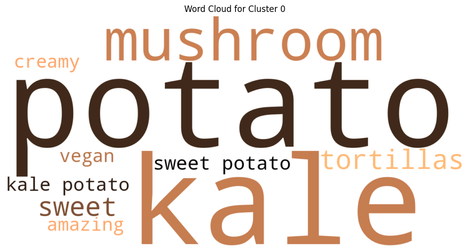
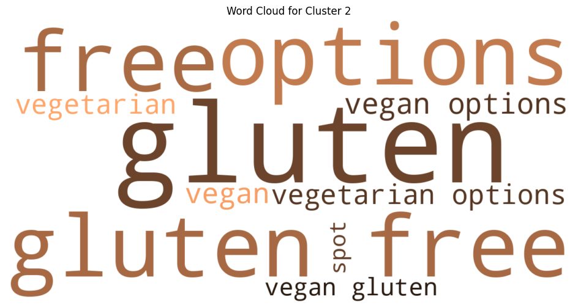
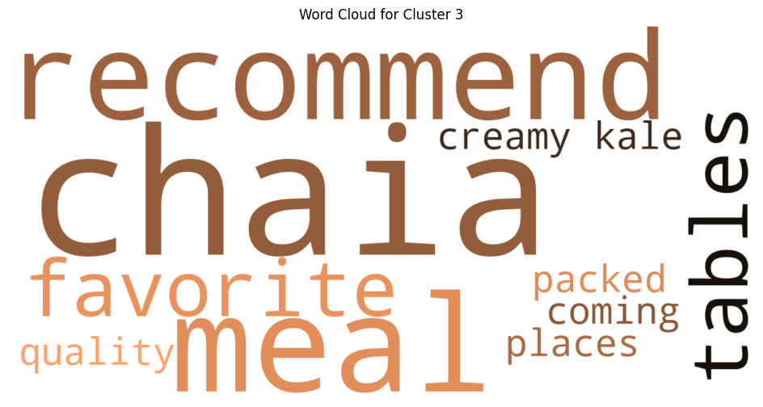
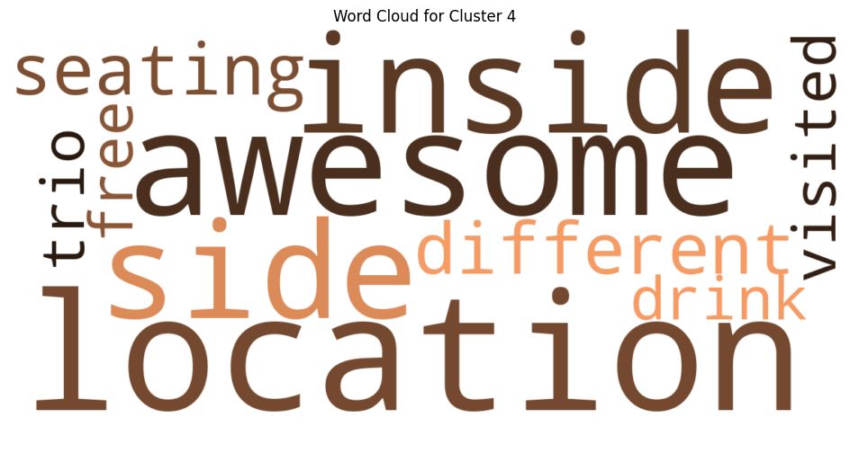
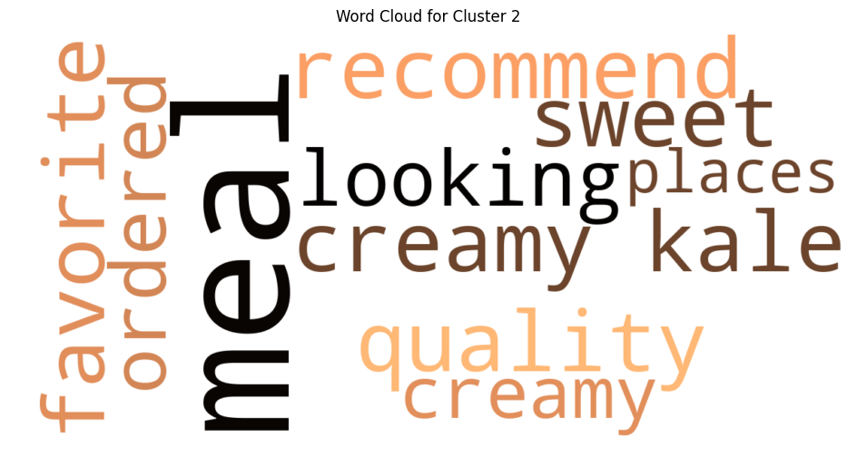
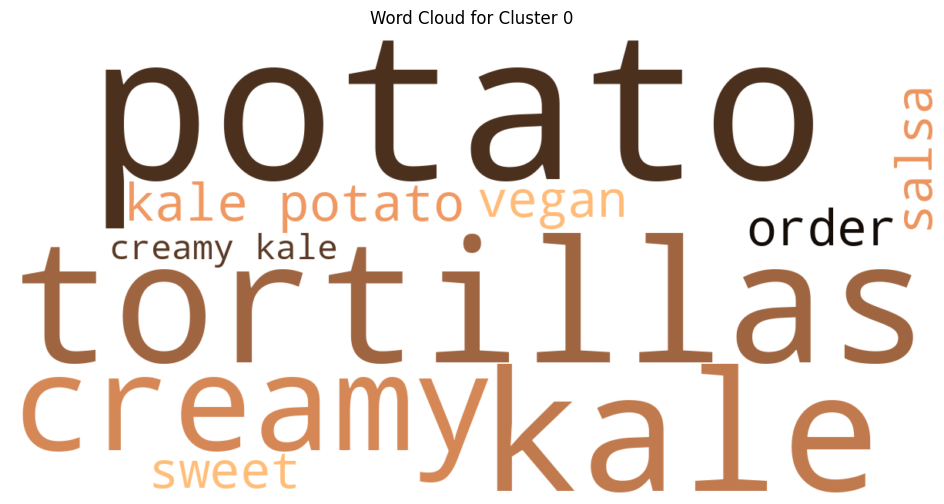
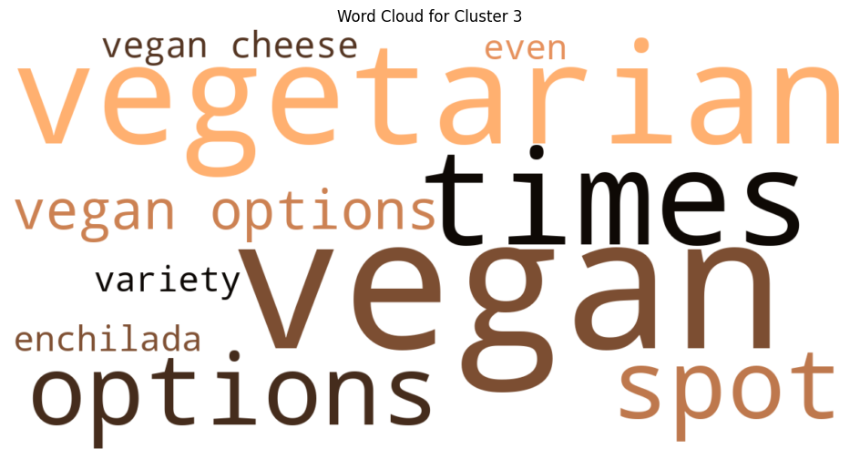

Chaia — Restaurant Reviews Sentiments
Background
This was part of a consulting project for Chaia—a DC-based taco restaurant with two locations in Chinatown and Georgetown. In order to better understand customer reviews and recommendations for Chaia, I analyzed Google reviews of Chaia Georgetown and Chaia Chinatown. I used semantic processing to group reviews by themes, and explored if there exists correlations between review categories and review ratings. I conducted our research with three datasets: all reviews from both locations, only reviews from the Georgetown location, and only reviews from the Chinatown location.
Findings
For the two locations
We identified and grouped the reviews into four clusters based on the themes as follows…
Cluster 0: Food Offerings
Cluster 1: Service Experience
Cluster 2: Vegetarian Options
Cluster 3: Chaia Brand
Cluster 4: Location
Cluster 5: Overall Experience
Graph showcasing review count and average rating of each category

Our review analysis shows that customers experience Chaia in a consistently positive way across both Georgetown and Chinatown, with recurring themes centered on food quality, unique vegetarian offerings, and generally friendly service. Signature menu items and Chaia’s broader brand identity receive especially strong sentiment, and these themes appear almost identically across both locations—indicating a coherent and reliable customer experience.
At the same time, the clusters also point to areas where Chaia can improve. Service-focused reviews, while positive overall, show the greatest variability, suggesting opportunities to reduce inconsistency in order speed, staff attentiveness, or in-store workflow. Food-experience clusters at Chinatown have slightly lower average ratings than their Georgetown counterparts, hinting at potential differences in preparation, freshness, or portion consistency. Additionally, some reviews mention value concerns and expectations around portion size or pricing, which could be addressed through clearer communication, menu adjustments, or added customization options.
Overall, Chaia’s brand strength lies in its distinctive flavors and vegetarian identity, but improving service consistency and tightening quality control across locations would further enhance customer satisfaction and strengthen the brand’s already positive reputation.
Below are the top keywords of each cluster presented as word clouds:
Cluster 0: Food Offerings; Review count = 477; Average rating 4.57

Cluster 1: Service Experience; Review count = 165; Average rating 4.43

Cluster 2: Food Experience; Review count = 77; Average rating 4.61

Cluster 3: General Opinion; Review count = 60; Average rating 4.78

Cluster 4: General Opinion; Review count = 43; Average rating 4.84

Cluster 5: General Opinion; Review count = 39; Average rating 4.97

Methodology
Our methodology was split up into several steps: data sourcing, data cleaning/processing, clustering/topic discovery, and visualizations.
For data sourcing: We used Google Takeout and successfully exported a complete set of user reviews of Chaia Georgetown and Chaia Chinatown. We filtered out reviews without text comments and this became the datasets we worked with.
For data cleaning and processing: We converted texts of reviews into embeddings with SentenceTransformer’s all-MiniLM-L6-v2. We then created a list of “stopwords,” common words that dilute the dataset and interfere with clustering results without contributing meaningful insights, so that these words would be ignored when grouping reviews.
For clustering: We used BERTopic, a topic modeling framework that allows us to effectively extract themes from Chaia’s Google reviews. The Google reviews were grouped into separate clusters based on their semantic similarities with one another through an algorithm known as HDBSCAN, a method aimed at identifying irregular shapes. We used this clustering technique due to the nature of the review datasets being prone to noise and irregularity, which would result in incorrect grouping if we used another algorithm such as K-Means. Finally, top keywords for each cluster is given through c-TF-IDF (class-term frequency-inverse document frequency).
For visualization: We created word clouds based on the c-TF-IDF scores of words in the clusters. The top words of each cluster are displayed in the word cloud and their sizes are proportional to their c-TF-IDF score. In other words, their sizes are proportional to their importance to the cluster. Based on the results we achieved, we then continued to add to and refine the list of stopwords with the goal of creating more accurate clusters and more meaningful themes.
Georgetown
I also looked into clustering reviews from the two locations individually to see if the clusters are similar thematically and if there are differences in ratings. I first looked at the Georgetown location, which was clustered into 4 groups
Cluster 0: Food Offerings
Cluster 1: Service Experience
Cluster 2: Food Experience
Cluster 3: General Opinion
Cluster 0: Food Offerings; Review count = 408; Average rating 4.55

Cluster 1: Service Experience; Review count = 101; Average rating 4.61

Cluster 2: Food Experience; Review count = 39; Average rating 4.77

Cluster 3: General Opinion; Review count = 38; Average rating 4.84

Chinatown
I then clustered the Chinatown reviews with the same methodology and received similar thematic clusters.
Cluster 0: Food Offerings
Cluster 1: Service Experience
Cluster 2: Food Experience
Cluster 3: General Opinion
Cluster 0: Food Offerings; Review count = 107; Average rating 4.62

Cluster 1: Service Experience; Review count = 73; Average rating 4.64
Cluster 2: Food Experience; Review count = 32; Average rating 4.4

Cluster 3: General Opinion; Review count = 30; Average rating 4.87

Conclusion
Across the board, Chaia displays strong performance in all thematic review clusters. The lowest average rating of all reviews was 4.4, which speaks for Chaia’s strong performances in customer satisfaction throughout different areas. The weakest area for Chaia appears to be in food experiences, particularly for the Chinatown location.
Our team presented our findings to Chaia’s owner, who reasoned that the Chinatown location may have lower ratings for reviews related to food experiences because the customer base there is more diversified. There are more walk-in customers who are unfamiliar with Chaia’s vegetarian positioning and brand identity. These subverted expectations could lead to disappointments over the food experiences. Nonetheless, the score is still high even for Chinatown’s Cluster 1, and the perceived difference could also be the result of outliers as opposed to genuine poorer customer satisfaction when it comes to the Chinatown location’s food.
Further Discussion
However, the analysis wasn’t without its limitations. First, reporting bias could affect the dataset. Polar experiences are more likely to be reported, therefore the analysis could be inflating the average customer’s true perception of Chaia. Second, because the research clusters based on embeddings, negative reviews may not be accounted for. This is because embeddings vectorize words based on how similar they are, therefore negative words such as “bad” and “horrible” are converted into similar numerical values. HBDSCAN clustering groups these words together, however if the cluster doesn’t reach the minimum cluster size, all of these reviews are treated as outliers and hidden from the results. This would create deceivingly high ratings across the board because negative sentiments are all grouped together and discarded.
To improve the results. a larger dataset of reviews would be helpful in addressing these limitations as the two locations only have around 1300 reviews on Google Maps. The analysis only considered reviews with written text, not those with only the star ratings, so the real dataset was even smaller. Large language models should also be able to label clusters more accurately by looking at not just top keywords but all words in the clusters. More sophisticated embeddings models may also lead to stronger results.